目次 > ゲームについて > 日本Falcom 攻略 > ZWEI II > 攻略チャート > オルディウム神殿ボス戦まで
らんの眼
ZWEI II (ツヴァイ 2、ZWEI II Plus)
| 概要 | 情報 | 攻略チャート |
| フード交換 | ペットについて | ボス戦 |
| 敵キャラ一覧 | ハンターランク | G-コロッセオ |
| アイテム一覧 | ガジェット一覧 | トレジャー一覧 |
| ダンジョン一覧 | クリアデータ特典 | Plusの追加要素 |
| ZWEI II攻略へ | 目次へ戻る |
| [ ～オルディウム神殿ボス ] [ ～アウロン大鉄塔ボス ] [ ～星降りの里 ] [ ～エンディング ] |
| セクンドゥム廃坑ボス戦まで |
| イントロ ラグナ墜落 大熊猫楼でのイベント ブランデーヶ丘へ行き、飛行機に近づく アルウェンの影との戦闘 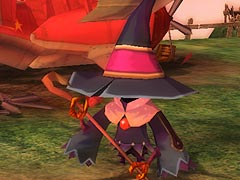 オープニング 大熊猫楼でのイベント 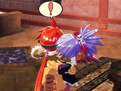 セクンドゥムの廃坑へ 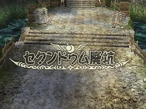 「始まりの坑道(LV.1)」を突破 「魔法石採掘場(LV.2)」へ行き、「Aパーツ」を入手 アルッテ飛行場にいるガシュレー親方にアンカーギアを改造してもらう(クリティカル率向上) 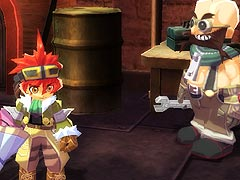 「クモの巣坑道(LV.2)」の前でオデッサとのイベント 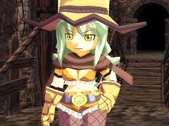 「クモの巣坑道」を突破 「クモの巣坑道」の奥でモンブランとのイベント アークシェロブ戦 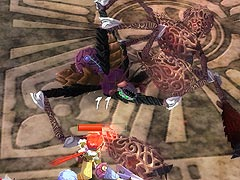 「地裂の魔法」を入手 ルゥとのイベント (おまけ) ロアルタ村のマーサが「穴あきチーズ」をくれる アルッテ飛行場のミリアムがミニマップ(ガジェット)をくれる 金闇の森でフィオナのイベント アウロン大鉄塔で妖精のイベント |
| オルディウム神殿ボスまで |
| ロアルタ村へ行き、村長に話しかける オルディウム神殿へ行く ピピロとポックルのイベント 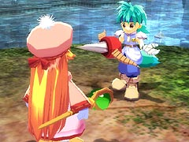 オルディウム神殿までの足場を作るイベント 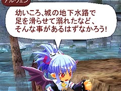 「本殿区画（LV.4）」を突破 「水の聖域(LV.5)」を突破し「Ｂパーツ」を入手 アルッテ飛行場のガシュレー親方に改造してもらい「フックギア」を入手 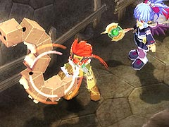 「祭壇への道(LV.5)」へ行く 「祭壇への道」の奥でエフェメルガ戦 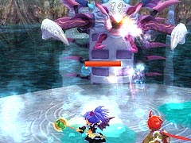 「凍結の魔法」を入手 ダイガルドとのイベント アルッテの町でのイベント 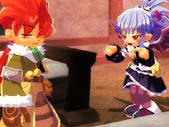 (おまけ) アウロン大鉄塔でフィオナのイベント 星ヶ峰で妖精のイベント セクンドゥム廃坑の「ゴーレム工房(LV.4)」の奥でギャランドゥから奥義を教わり、「ピンクチケット」を入手 これにより、セクンドゥム廃坑にある「G-コロッセオ」へ行くことができる 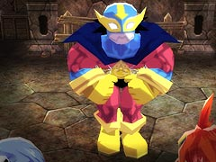 大熊猫楼でピピロたちとのイベント ロアルタ村のチェスクにピザを渡し、「ソロモンリング」を入手 |
| [ ～オルディウム神殿ボス ] [ ～アウロン大鉄塔ボス ] [ ～星降りの里 ] [ ～エンディング ] |
| 概要 | 情報 | 攻略チャート |
| フード交換 | ペットについて | ボス戦 |
| 敵キャラ一覧 | ハンターランク | G-コロッセオ |
| アイテム一覧 | ガジェット一覧 | トレジャー一覧 |
| ダンジョン一覧 | クリアデータ特典 | Plusの追加要素 |
| ページの上部へ | ZWEI II 攻略へ | 目次へ戻る |